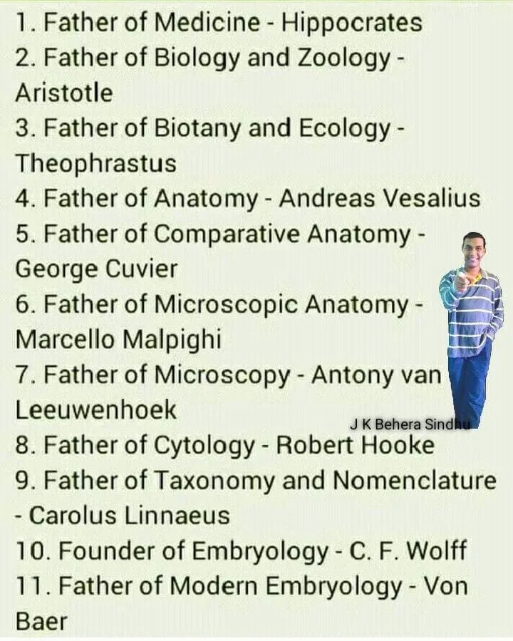
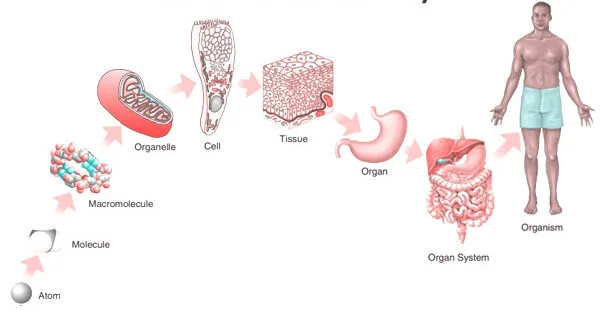
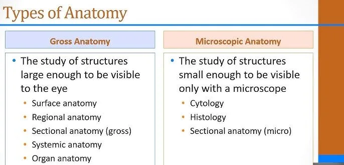
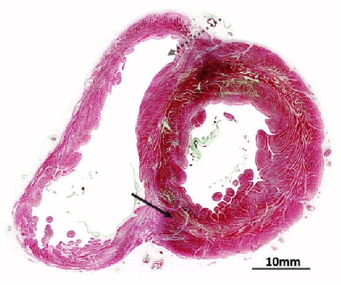
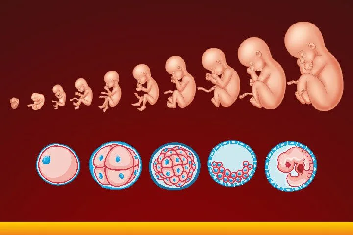

Expanded Nursing Uganda Explanation
Introduction to Anatomy should be understood beyond a short definition. Link the concept to patient history, focused assessment, common risks, nursing priorities, documentation and evaluation of outcomes.
Contents — 17 sections (tap to expand)
01 Introduction to Anatomy
Anatomy is the scientific study of the structural organization of the human body, ranging from microscopic cells to large, visible structures like organs and bones. Derived from the Greek word for "cutting apart," it explores how these parts are arranged to form functional systems, often in conjunction with physiology, which focuses on function.
02 The History of Anatomy
For centuries, the dissection of human bodies was taboo in many societies. The journey of anatomical study is marked by key historical milestones:
- Claudius Galenus: A second-century Greek physician who learned about the human form by performing vivisections on pigs.
- Leonardo da Vinci: Poked around in dead bodies and created beautifully detailed anatomical drawings until the Pope made him stop.
- 17th and 18th Centuries: Certified anatomists were allowed to perform tightly regulated human dissections. These were often popular public events attended by artists like Michelangelo and Rembrandt.
- The Anatomy Act (1832): The study of human anatomy became such a craze in Europe that grave robbing became a lucrative occupation until Britain passed this act, which provided students with corpses of executed murderers.
- Modern Day: Today, students of anatomy and physiology still use educational cadavers, which are donated by volunteers.
- Andreas Vesalius: Known as the 'Father of Anatomy' . He was the first to carry out dissection to closely observe the inner structure and construction of the human body.
03 Function Follows Form
This is the core principle of anatomy. It means that the shape of a body part (its structure or form) is perfectly designed for its job (its function ). The function of a cell, organ, or whole organism always reflects its form. This is also known as the Complementarity of Structure and Function .
Think of a fork. It has prongs (its form) specifically to help it pick up food (its function). Your teeth are a perfect biological example. Your sharp front teeth are for tearing food, while your flat back teeth are for grinding. Their shape is perfect for their job.
04 Hierarchy of Organization
The human body is organized in a hierarchical manner, from the smallest chemical components to the entire organism. Levels of Organization in the Body:
- Chemical Level: Atoms and molecules, the smallest units of matter.
- Cellular Level: Cells, the smallest units of living things.
- Tissue Level: Groups of similar cells that work together.
- Organ Level: Two or more tissue types performing a specific function.
- Organ System Level: Groups of organs working together for a common purpose.
- Organismal Level: The sum total of all structural levels working together to keep us alive.
05 Homeostasis
Homeostasis is the ability of all living systems to maintain stable internal conditions no matter what changes are occurring outside the body. Survival is all about maintaining this delicate balance.
Think of a thermostat. If the house gets too cold, the heat turns on. If it gets too hot, the A/C kicks in. Your body does this constantly. If you get hot, you sweat to cool down. If you get cold, you shiver to warm up. Your body is always working to keep your temperature, blood sugar, and many other factors in a perfect, stable range.
06 Foundational Anatomical Terms
Mastering the language of anatomy is the first step to understanding its complexities. This guide covers the foundational terminology you will encounter throughout your studies. These terms provide a universal standard for describing the structure and function of the human body.
- Human anatomy (ah-nat -o−-me−) is the study of the structure and organization of the body and the study of the relationships of body parts to one another. There are two subdivisions of anatomy: Gross anatomy involves the dissection and examination of various parts of the body without magnifying lenses.
- Microanatomy , also known as histology, consists of the examination of tissues and cells with various magnification techniques.
- Human physiology (fiz-e−-ol-o−-je−) is the study of the function of the body and its parts. Physiology involves observation and experimentation, and it usually requires the use of specialized equipment and materials.
- Term (Etymology) Definition Example
- Anatomy (ana = apart; tom = to cut) The study of the structure of living organisms. Studying the bones, muscles, and organs in a human cadaver to understand their physical arrangement.
- Appendicular (append = to hang) Pertaining to the upper and lower limbs. The appendicular skeleton includes the bones of the arms, legs, shoulders, and pelvis.
- Axial (ax = axis) Pertaining to the longitudinal axis of the body. The axial skeleton consists of the skull, vertebral column, and rib cage, forming the central support of the body.
- Body region (regio = boundary) A portion of the body with a special identifying name. The "cephalic region" refers to the head, while the "thoracic region" refers to the chest.
- Directional term (directio = act of guiding) A term that references how the position of a body part relates to the position of another body part. The nose is superior to the mouth, and the feet are inferior to the knees. The sternum (breastbone) is anterior to the spine.
- Effector (efet = result) A structure that functions by performing an action that is directed by an integrating center. In regulating body temperature, sweat glands are effectors that produce sweat to cool the body down when directed by the brain.
- Homeostasis (homeo = same; sta = make stand or stop) Maintenance of a relatively stable internal environment. The body maintaining a constant internal temperature of approximately 37°C (98.6°F) regardless of external temperature changes.
- Integrating center (integratus = make whole) A structure that functions to interpret information and coordinate a response. The brain acts as an integrating center when it receives signals that blood sugar is too high and then sends signals to the pancreas to release insulin.
- Metabolism (metabole = change) The sum of the chemical reactions in the body. The digestion of food into nutrients (catabolism) and the building of new tissues from those nutrients (anabolism) are both parts of metabolism.
- Parietal (paries = wall) Pertaining to the wall of a body cavity. The parietal pleura is the outer membrane lining the wall of the thoracic (chest) cavity.
- Pericardium (peri = around; cardi = heart) The membrane surrounding the heart. The pericardium provides protection and lubrication for the heart as it beats within the chest cavity.
- Peritoneum (peri = around; ton = to stretch) The membrane lining the abdominal cavity and covering the abdominal organs. The peritoneum allows organs like the intestines to slide past each other without friction during digestion.
- Physiology (physio = nature; logy = study of) The study of the functioning of living organisms. Studying how the heart pumps blood through the circulatory system or how the kidneys filter waste from the blood.
- Plane (planum = flat surface) Imaginary two-dimensional flat surface that marks the direction of a cut through a structure. A sagittal plane divides the body vertically into right and left parts.
- Pleura (pleura = rib) The membrane lining the thoracic cavity and covering the lungs. The pleura secretes a fluid that allows the lungs to expand and contract smoothly within the rib cage during breathing.
- Receptor (recipere = receive) A structure that functions to collect information. Temperature receptors in the skin detect changes in environmental temperature and send signals to the brain.
- Section (sectio = cutting) A flat surface of the body produced by a cut through a plane of the body. A cross-section (or transverse section) of the small intestine would show its internal layers, like the mucosa and muscle layers.
- Serous membrane (serum = watery fluid; membrana = thin layer) A two-layered membrane that lines body cavities and covers the internal organs. The pleura, pericardium, and peritoneum are all examples of serous membranes.
- Visceral (viscus = internal organ) Pertaining to organs in a body cavity. The visceral pleura is the inner membrane that directly covers the surface of the lungs.
07 What is Anatomy?
Imagine you're taking apart a complex toy to see how it's built. Anatomy is very similar – it's the study of the body's structure, like looking at all the pieces of that toy.
- Body Parts: This includes everything from the smallest cells to the largest organs and how they all fit together.
- Relationships: It's not just about what the parts are, but also how they interact. Think of how a gear connects to another gear in that toy.
- Analogy: If you're building a house, anatomy is like looking at the blueprint and understanding where all the walls, pipes, and wires go.
08 Branches of Anatomy: Different Ways to Look at the Body
Anatomy is a huge field, so scientists have divided it into different ways to study the body, kind of like having different magnifying glasses to look at the same object.
09 1. Gross (Macroscopic) Anatomy: What You Can See
This is about the big stuff, the parts of the body you can see with your naked eye without a microscope.
- "Gross" here means large, not disgusting!
- Example: When you see a doctor examining a bruise on your arm, or when a surgeon operates and sees organs like the heart or lungs directly, that's gross anatomy in action.
- Origin of the word "Anatomy": It comes from Greek words meaning "to cut apart." This makes sense for gross anatomy, as doctors and scientists often dissect (cut up) bodies or organs to study them.
Subdivisions of Gross Anatomy:
- Regional Anatomy: Studying everything in one specific area. Imagine: You're studying the "head region." You'd look at the bones of the skull, the muscles of the face, the nerves, and blood vessels all within that one area at the same time.
- Another example: If you're studying the "leg," you'd look at the femur bone, the quadriceps muscle, the femoral artery, and the sciatic nerve, all as they exist in the leg.
- Systemic Anatomy: Studying one body system throughout the entire body. Imagine: You're studying the "circulatory system." You'd follow the heart, arteries, veins, and capillaries all over the body, from your head to your toes.
- Another example: When you study the "skeletal system," you learn about all the bones in the body, their names, and how they connect, regardless of where they are located.
- Surface Anatomy: Looking at what's under the skin by observing the surface. Imagine: A bodybuilder flexing their biceps. You can see the shape of the muscle just by looking at their arm, even though the muscle is under the skin.
- Another example: A nurse feeling for a pulse in your wrist is using surface anatomy to locate the radial artery, even though they can't see it directly.
10 2. Microscopic Anatomy: What You Need a Microscope For
This branch deals with the tiny structures you can't see without magnification.
- Example: Think about how you need a magnifying glass to see the details of a tiny insect. For microscopic anatomy, we use powerful microscopes.
- How it's done: Scientists take very thin slices of body tissue, stain them (to make different parts visible), and then look at them under a microscope.
Subdivisions of Microscopic Anatomy:
- Cytology: The study of individual cells. Imagine: Looking at a single brick of a house. Cytology is studying that individual brick – its shape, what's inside it, how it functions.
- Example: Examining a red blood cell to see its biconcave shape and lack of a nucleus.
- Histology: The study of tissues (groups of similar cells working together). Imagine: Looking at a whole wall of a house, which is made up of many bricks. Histology is studying how those cells (bricks) are organized into tissues (walls).
- Example: Looking at a piece of muscle tissue and seeing how the muscle cells are arranged to allow for contraction.
Microscopes Used:
- Light Microscope (for Histology): Uses light to magnify. It's good for seeing tissues and larger cells, but has limitations.
- Electron Microscope (for Cytology/Ultrastructure): Uses a beam of electrons for much higher magnification. This allows us to see the tiny structures inside cells (like organelles).
- Analogy: A light microscope is like seeing a blurry photo, while an electron microscope is like a super high-definition photo, letting you see every tiny detail.
11 3. Developmental Anatomy: How the Body Changes Over Time
This branch focuses on how the body grows and changes throughout an individual's entire life.
- Example: How does a single fertilized egg develop into a baby, then a child, an adult, and eventually an elderly person? Developmental anatomy studies all these transformations.
Subdivisions of Developmental Anatomy:
- Embryology: The study of development before birth. Imagine: Watching a tiny seed sprout and grow into a small plant before it even breaks the surface of the soil. Embryology is studying the development of a baby inside the mother's womb.
- Example: Understanding how the heart forms from simple tubes into a four-chambered organ during the first few weeks of pregnancy.
- Ontogeny (Ontogenesis/Morphogenesis): The study of development from conception (fertilized egg) all the way through old age. Imagine: Following that plant from the seed, through its growth into a mature plant, producing flowers and fruits, and eventually withering and dying. Ontogeny covers the entire lifespan.
- Example: Studying how bones grow and change density from childhood to adulthood and how they might weaken in old age.
12 Other Specialized Branches (for Medical and Research Purposes)
These are like specific tools used for particular jobs in medicine and science.
- Pathological Anatomy: Studies how diseases change the body's structures. Example: Examining a cancerous tumor to understand how the cells have changed and what kind of cancer it is.
- Radiographic Anatomy: Studies internal structures using imaging techniques. Example: An X-ray to look at a broken bone, an ultrasound to see a baby in the womb, or a CT scan to create detailed images of organs. These help doctors see inside without cutting the body open.
- Molecular Biology: Investigates the structure of tiny biological molecules (like DNA or proteins). Example: Studying the shape of a specific protein to understand how it functions in the body or how a drug might interact with it.
13 How to Study Anatomy
It's not just about memorizing names! Here are the key methods used to study the human body:
- Anatomical Terminology: Learning the specific language used to describe body parts and directions (e.g., "anterior" for front, "posterior" for back). This is like learning the vocabulary for a new language.
- Observation: Looking closely at models, diagrams, or actual specimens.
- Manipulation: Handling models or specimens to understand their 3D relationships.
- Palpation: Feeling organs or structures with your hands (e.g., a doctor feeling your lymph nodes).
- Auscultation: Listening to body sounds with a stethoscope (e.g., a doctor listening to your heart or lungs).
Quick Quiz
14 Nursing Uganda Clinical Lens
Use Introduction to Anatomy as a practical nursing topic, not only a memorized definition. Start with normal structure and function, then connect it to assessment findings and disease.
- What to understand first: define introduction to anatomy, identify the normal or expected pattern, then explain what changes when the patient is unwell.
- Why it matters in care: the nurse must recognize risk early, explain findings clearly, document accurately and know when to escalate.
- How to revise it: connect each point to assessment, nursing diagnosis or care problem, intervention, rationale and evaluation.
15 Assessment Guide
- Relevant inspection, palpation, movement, auscultation, vital signs or neurological checks.
- Normal findings, abnormal findings and what each abnormality may indicate.
- Patient history, risk factors and how the body system affects other systems.
16 Nursing Priorities, Rationales and Outcomes
- Use anatomy to explain symptoms and guide focused assessment.
- Recognize findings that need urgent escalation.
- Teach the patient using simple body-system language.
The rationale for these priorities is patient safety: nursing actions should prevent deterioration, reduce discomfort, support recovery and create clear evidence for the next caregiver.
- Expected outcome: The learner can explain normal function, identify abnormal signs and connect them to nursing action.
17 Patient Teaching and Revision Check
- Explain introduction to anatomy in simple language the patient or caregiver can repeat back.
- Teach warning signs, medicine or follow-up instructions, hygiene or lifestyle points where relevant.
- For exams, prepare a short answer using: definition, causes or risk factors, signs, assessment, management, complications and prevention.
- For ward practice, document baseline findings, actions taken, patient response and the plan for review.
Illustrations and Diagrams (5)





Related Video Lectures
Watch nursing lecture videos on YouTube for this topic. Opens in a new tab.
Watch on YouTubeExternal link: YouTube may use its own cookies and terms. Nursing Uganda is not affiliated with YouTube.